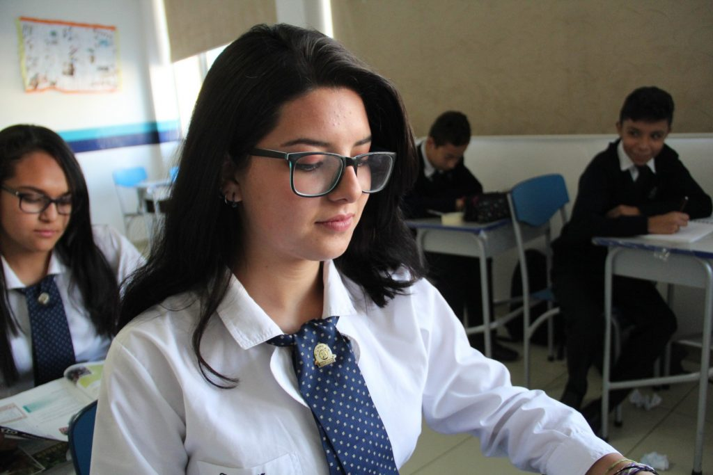

BIENVENIDO
La escuela es un lugar donde comienza la primera vida social y comunitaria de su hijo. Se convierte en un segundo hogar para niños, niñas y jóvenes, todos los cuales, naturalmente, sienten curiosidad por el mundo que los rodea, además de sentirse entusiasmados con el aprendizaje. El plan de estudios de nuestra institución está diseñado para aprovechar esta curiosidad natural y para canalizar el entusiasmo de los niños de por vida por el aprendizaje, el descubrimiento y la comprensión. A lo largo de su vida estudiantil, nuestros estudiantes están expuestos a un currículo amplio y rico a través del cual desarrollan una base sólida de habilidades académicas básicas, así como una amplia gama de experiencias en las que pueden aprender.
Nos encanta trabajar en estrecha colaboración con los padres de familia y reconocemos la gran importancia que tiene elegir una escuela. Debe ser en el que usted se sienta seguro de que su hijo / hija será cuidado, valorado y, lo más importante, será feliz. Su hijo estará listo para aprender. La Comunidad Educativa está muy orgullosa de esta institución y recomendamos que los futuros padres nos visiten para que puedan ver qué lugar tan feliz y emocionante es. Cada estudiante es bien conocido por los maestros y se le presta mucha atención de proporcionarle la mejor educación como individuo. Con muchas oportunidades de éxito, él puede desarrollar su confianza.
HIMNO AL COLEGIO
LETRA Y MÚSICA: Maestro Paco Godoy
Gloria a ti, oh colegio querido
formación integral tu misión
predicar la Verdad tu carisma
guíanos Virgen Madre de Dios.
Salve, salve patrono y santo
Domingo de Guzmán eres luz.
//Forjamos la ciencia y el arte
Tú estandarte de honor y virtud//
Oh juventud a predicar
oh juventud a bendecir
alabaremos sin cesar
inmaculada guíanos
y nuestro lema siempre fiel
“Por Dios y por mi Patria”
//Nuestro inmenso ideal
forma personas de bien
fraternas cual un buen ser
Trascendental//
OFRECEMOS
1 HITOS IMPORTANTES
Institución con Planes de Mejora Institucional Continuos, manejamos instrumentos para avanzar en una transformación progresiva del modelo institucional de la educación y de la prácticas pedagógicas.
2 ISO 9001 – 2015 Sistemas de Gestión de la Calidad
ISO 9001 – 2015 es una norma de sistemas de gestión de la calidad (SGC) reconocida internacionalmente. La norma ISO 9001 es un referente mundial en SGC, superando el millón de certificados en todo el mundo.
3 Mejores perspectivas de carrera
La educación en nuestra institución y siguiendo nuestro programa especial amplía los horizontes para nuestros graduados y asegura las perspectivas de carrera
4 Cambridge Certificate
Contamos con una dirección académica que brinda constante apoyo a estudiantes y profesores, monitorea las clases, el nivel académico, los recursos bibliográficos y las planificaciones para facilitar el cumplimiento de los objetivos.
UBICACIÓN
VEINTIMILLA 1128 Y AMAZONAS
QUITO 17 0524 Ecuador
COPYRIGHT
© 2018 SDGQ. All rights reserved.
CONTACTOS
E. info@santodomingodeguzman.edu.ec
T. (593)222-2101